Practica8.1-Hosting_compartido_PLESK#
Creación de un servidor Plesk para Hosting Compartido
Explicación de la práctica#
Para esta práctica vamos a implementar en una instancia de Ubuntu 24.04 Server un servidor Plesk.
Plesk es una plataforma software de hosting que permite alojar y administrar sus aplicaciones web en un servidor virtual privado (VPS), en un servidor dedicado o en un servidor de un proveedor de servicios cloud.
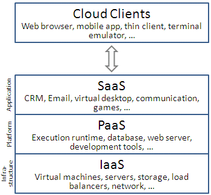
Estos servidores permiten una gran versatilidad a la hora de ofrecer hosting compartido o servicios multimedia para los usuarios, por lo que se colocan como una solución muy buena tanto a nivel profesional como usuario.
Creación del entorno#
Lo primero de todo será crear una instancia en AWS con Ubuntu 24.04 Server con las siguientes características:
- Nombre de la instancia: plesk.
- Imagen (AMI): Última versión disponible de Ubuntu Server.
- Arquitectura: x86.
- Tipo de instancia: t2.medium (2 vCPUs, 4 GB de RAM).
- Par de claves: vockey.
- Grupo de seguridad: Crear un grupo de seguridad para plesk.
- Almacenamiento: 30 GB de disco EBS.
- Ip elástica.
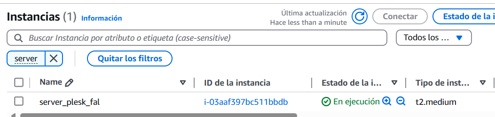
Después debemos crear un grupo de seguridad que llamaremos sg_plesk con las siguientes reglas de seguridad:
- 22: SSH (TCP)
- 80: HTTP (TCP)
- 443: HTTPS (TCP)
- 21: FTP (TCP) - Puerto de control en los modos activo y pasivo
- 20: FTP (TCP) - Puerto de datos en el modo activo
- 49152 - 65535: Rango de puertos dinámicos para el modo pasivo (TCP)
- 25: SMTP (TCP)
- 465: SMTPS (TCP)
- 143: IMAP (TCP)
- 993: IMAPS (TCP)
- 110: POP3 (TCP)
- 995: POP3S (TCP)
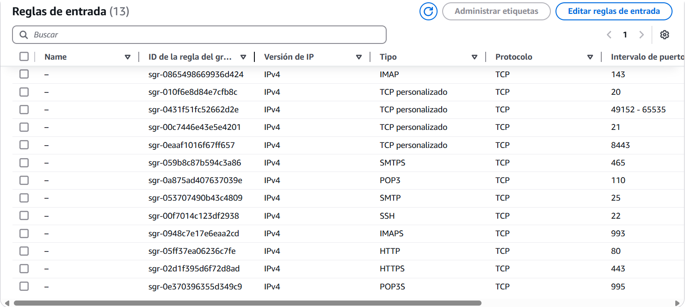
Despliegue del servidor#
Una vez entendido como funciona el servicio de hosting compartido de Plesk, lanzaremos el sistema, primero debemos lanzar como sudo, nuestro archivo install_plesk.sh
# Descargamos las dependecias de plesk
wget https://autoinstall.plesk.com/plesk-installer
# Le damos permisos de ejecución
chmod +x plesk-installer
# Ejecutamos el
./plesk-installer install plesk
Y esperaremos aproximadamente 10 minutos y nos dará un enlace para poder entrar en nuestro servicio para colocar la primera contraseña de administrador.
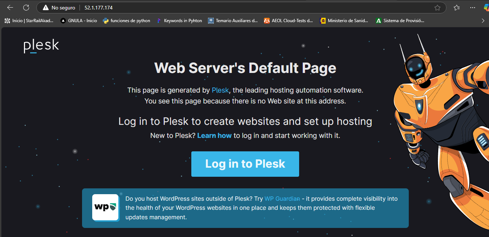
Además si colocamos el comando:
login plesk
Una vez estemos dentro veremos un dashboard con diferentes opciones. Ahora vamos a trabajar con él.
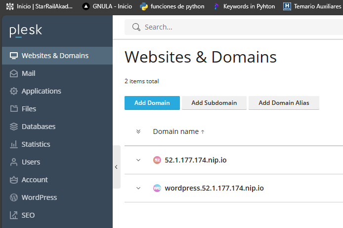
Administración de sitios#
Para esta práctica vamos a crear diferentes sitios dentro de nuestro Plesk.
Sitio estático#
Le damos a Add Domain y veremos una pantalla para crear una página, esta podrá ser en blanco, una aplicación, a partir de un repositorio, etc... Nosotros ahora vamos a crear un sitio estático y le damos a Blank website.
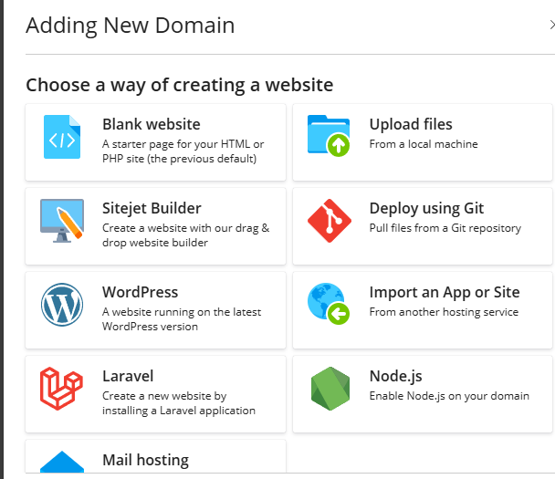
Y colocamos el dominio, que en nuestro caso vamos a utilizar el sitio de redireccionamiento de dominio nip.io
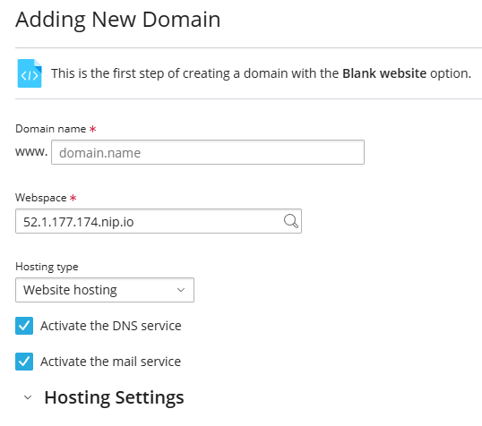
Y una vez creado veremos un dashboard propio de nuestra web.
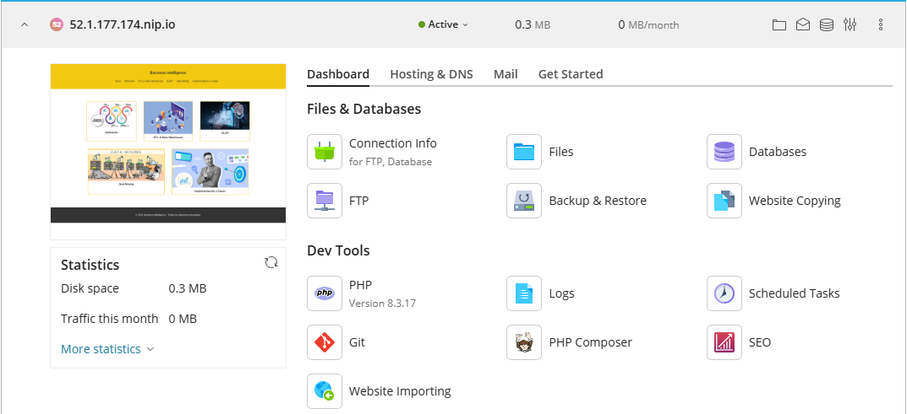
Como nosotros vamos a establecer un sitio virtual que creamos en otra asignatura, vamos a instalarlo yendo al apartado file del nuestro sitio.
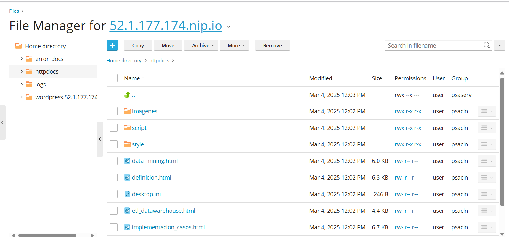
Y una vez tenemos el directorio instalado, entramos en la dirección.
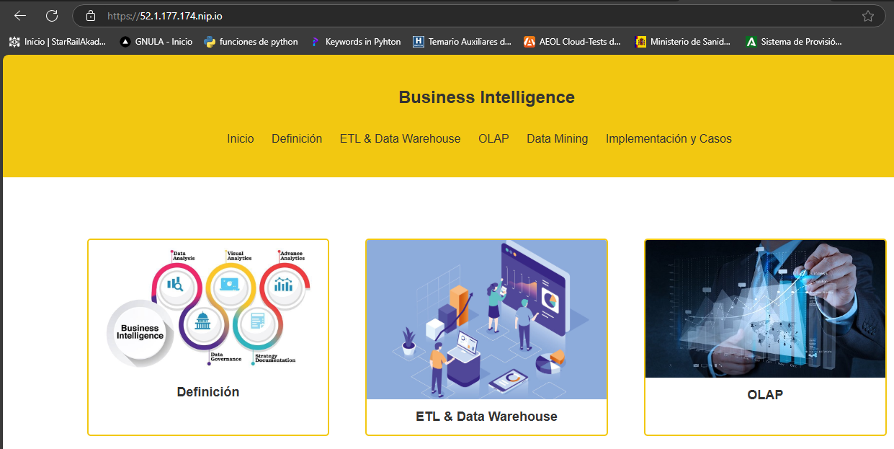
Sitio Wordpress#
Luego vamos a crear un sitio nuevo de wordpress. Para ello creamos un nuevo sitio como anteriormente, pero señalamos la instalación de WordPress.

Colocamos la ip y el nombre de dominio.
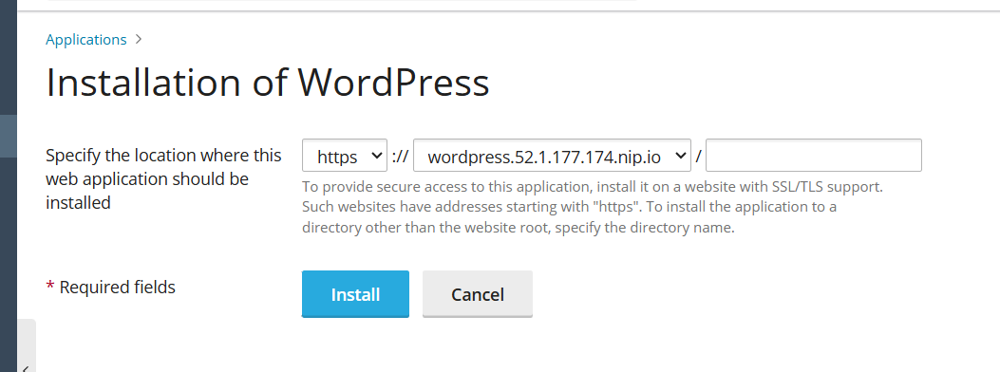 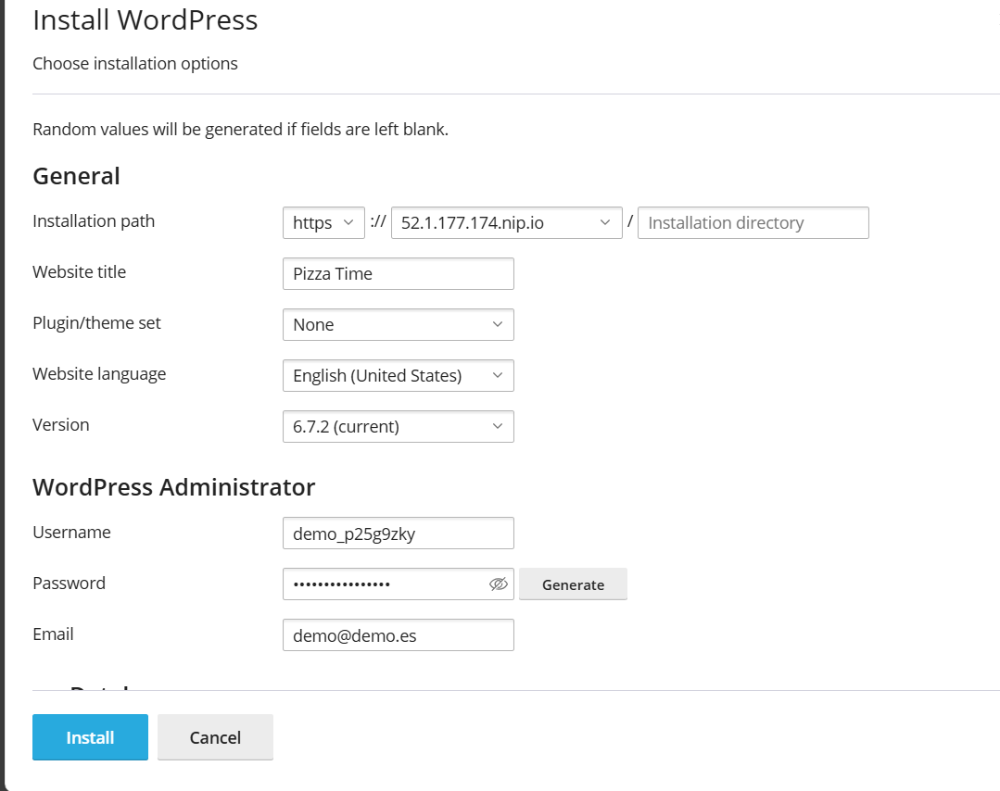
Y veremos en el mismo sitio, el dashboard de nuestro Wordpress.
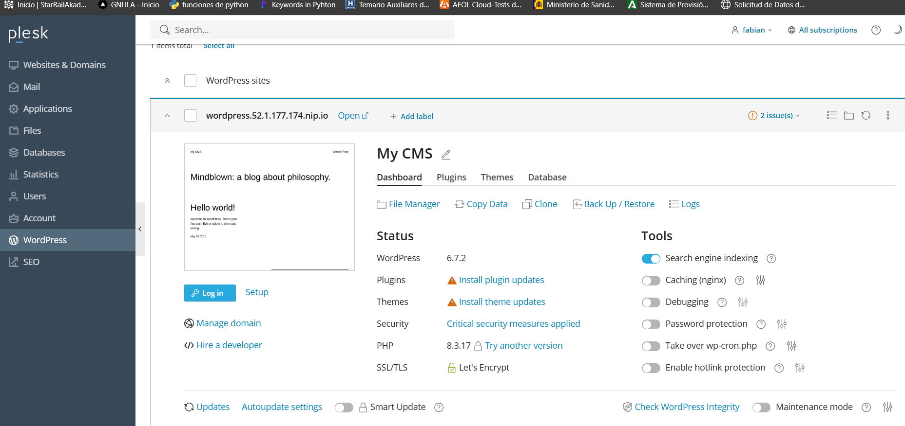
Y al acceder a nuestro sitio veremos nuestro wordpress.
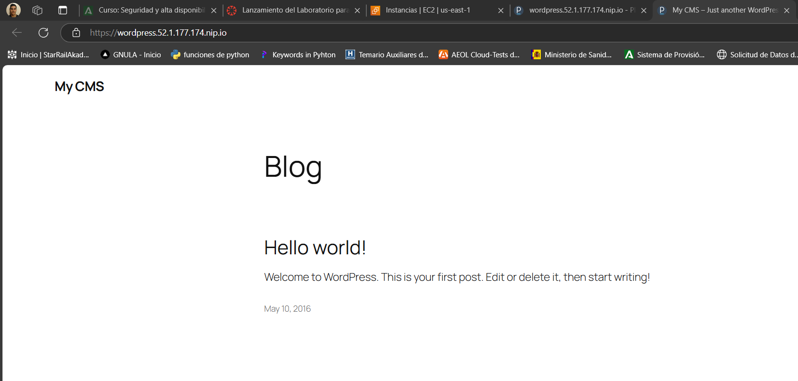
Luego vamos a ver como nuestro sitio no está securizado.
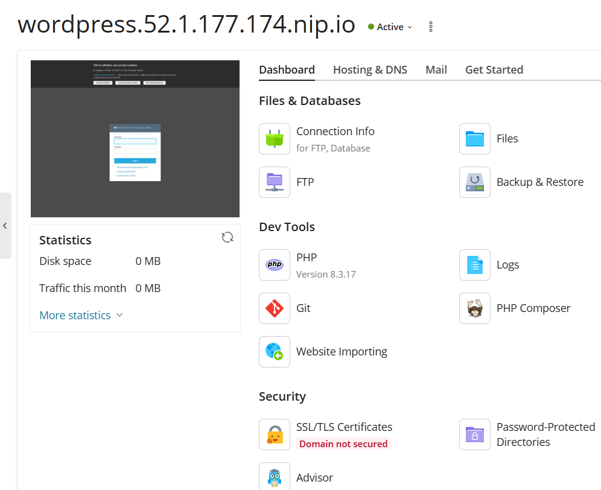
Entramos en el apartado, elegimos certificado Let's Encrypt, que se encargará de hacer los desafíos necesarios para obtener el certificado.
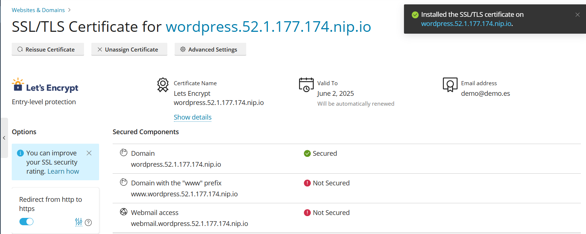
Y finalmente daremos en el apartado de securización e instalaremos todas las actualizaciones necesarias para tener al día nuestro sitio y evitar ataques malintencionados.
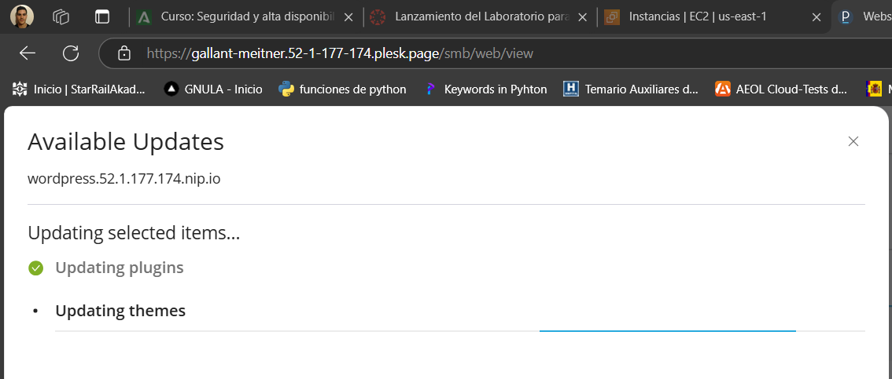
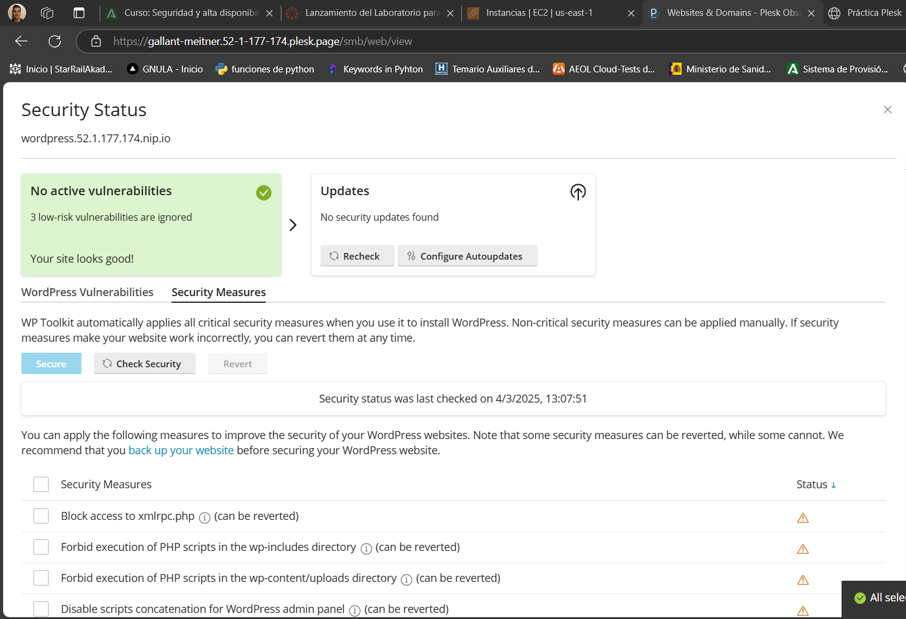